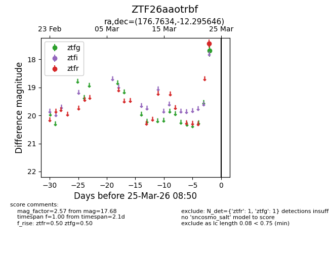
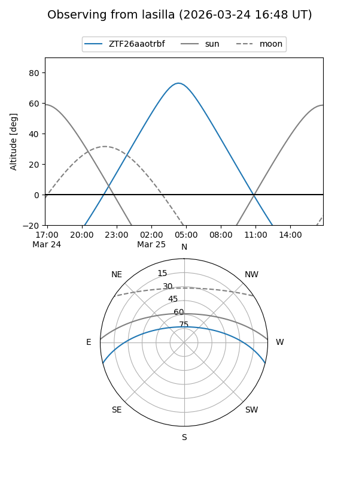
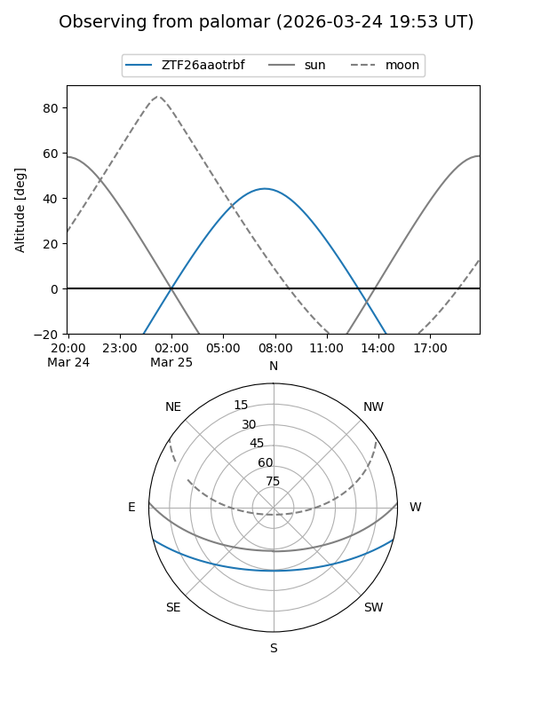

ZTF26aaotrbf
Target ZTF26aaotrbf at 2026-03-25 08:53
Aliases and brokers:
FINK: link
Lasair: link
ALeRCE: link
alt names
ZTF26aaotrbf (ztf,fink_ztf)
Coordinates:
equatorial (ra, dec) = 176.7634,-12.29565
equatorial (HMS+DMS) = 11:47:03.22,-12:17:44.33
galactic (l, b) = (279.2485,+47.59359)
Flags:
Photometry:
last ztfg=17.68, ztfr=17.44
1 ztfg, 1 ztfr detections
Lightcurve

Visibility


Additional plots